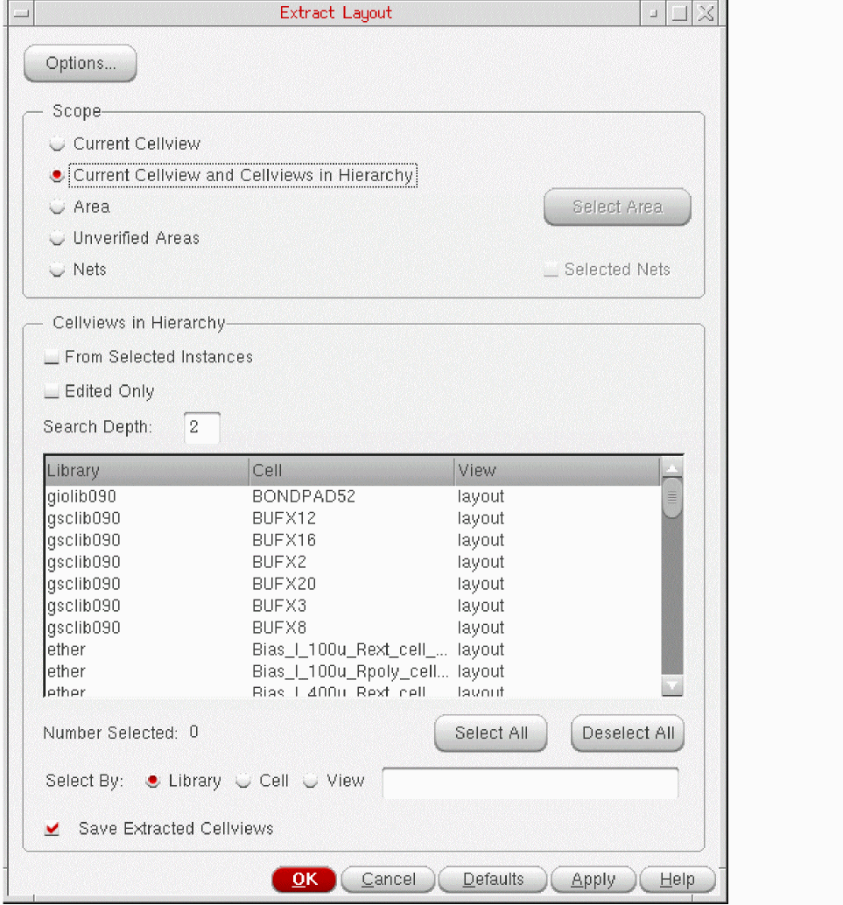
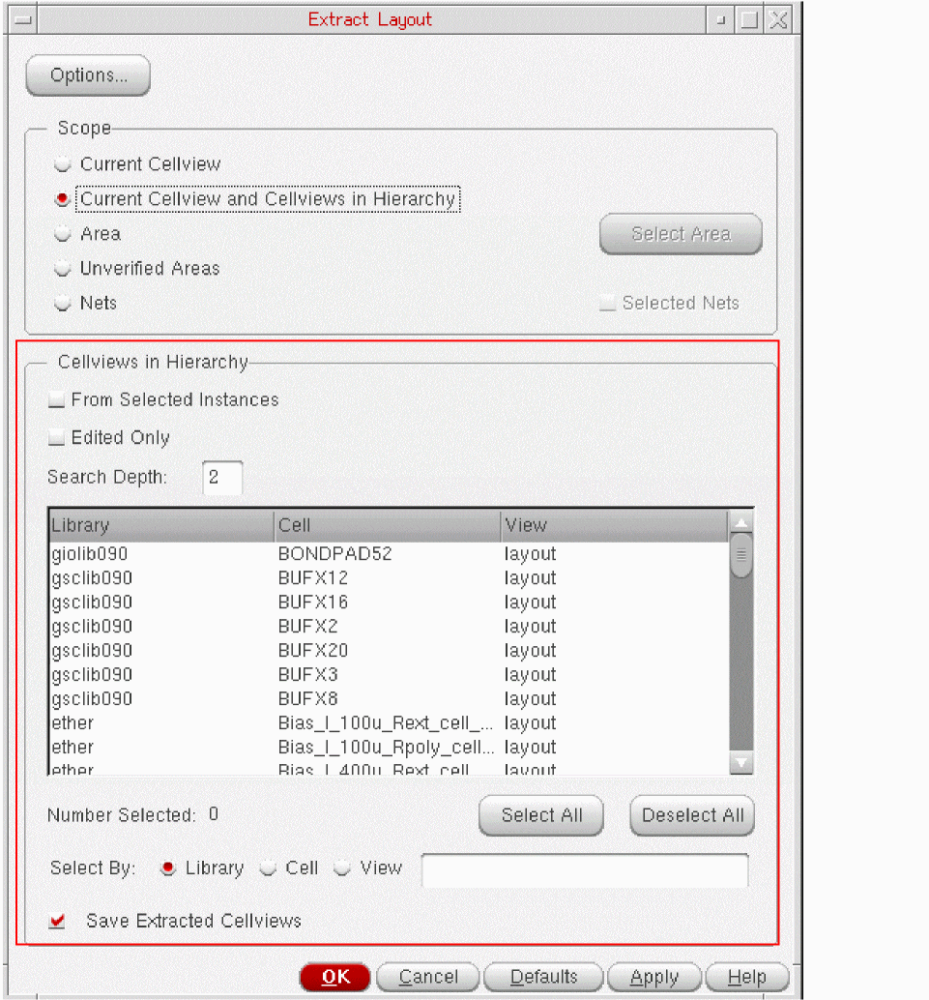
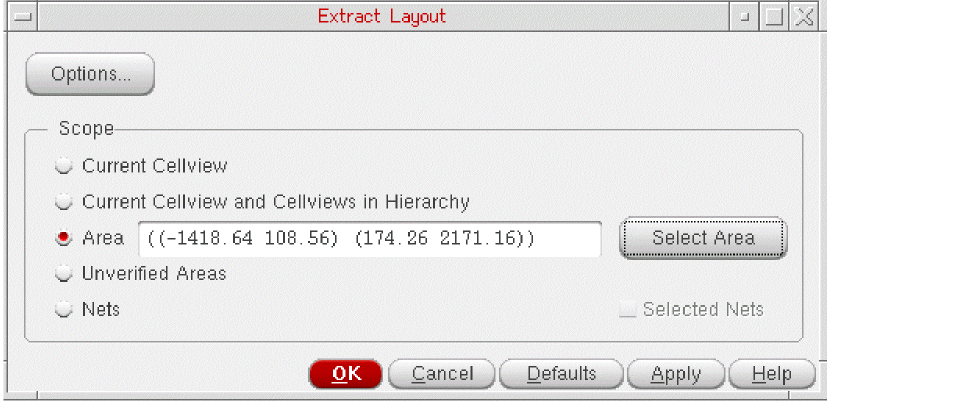
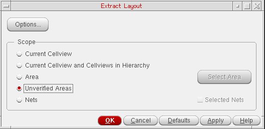
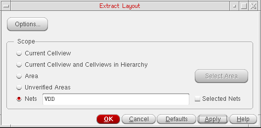
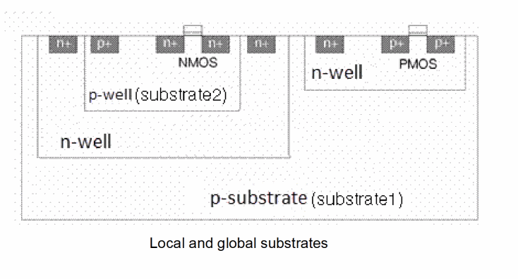
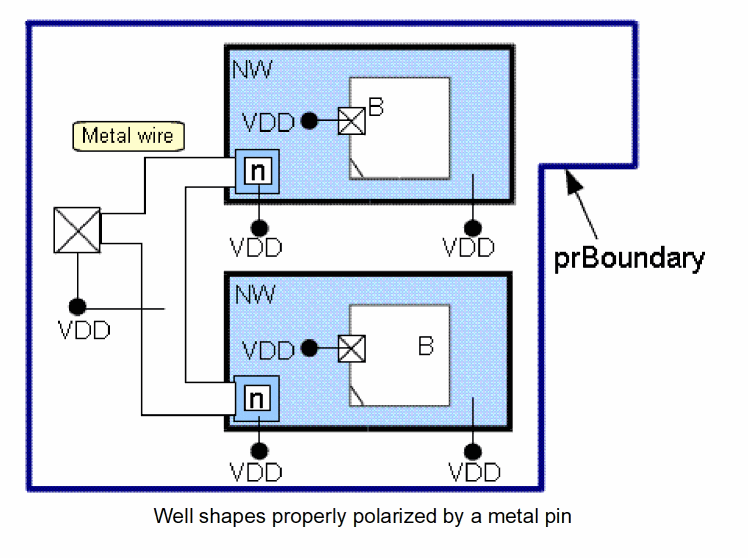

7
Extracting Design Connectivity
This chapter explains how the Virtuoso® Layout Suite XL layout editor (Layout XL) processes connectivity information and presents several ways to prepare your design for routing.
This chapter discusses the following topics.
- Connectivity Extraction
- Connectivity Extraction from Substrate and Well Layers
- Connectivity Extraction from Mosaics
- Shape Trimming Support
- Support for Color-Dependent Shape Trimming
- Enabling Virtual Connections
- Markers
For information about how to use the Virtuoso Space-based router to route your design, see the Virtuoso Space-based Router User Guide.
Connectivity Extraction
The Layout XL connectivity extractor verifies that the connectivity of your physical implementation is legal and generates violation markers indicating open and short circuits, weak and must connect violations, and illegal overlaps in the design.
You can specify the types of markers that are created and limit the number of open violations displayed using the controls on the Connectivity Tab of the Connectivity form. You can view and manage the violation markers in the Connectivity tab of the Annotation Browser assistant.
This section discusses the following topics:
- Connectivity Extraction Use Model
- Connections Recognized by the Extractor
- Extracting a Top-Level Design
- Extracting Hierarchical Cellviews
- Extracting Connectivity by Area
- Enabling and Disabling Incremental Extraction
- Assigning Connectivity to a Via
Connectivity Extraction Use Model
When you open a design in Layout XL, by default, connectivity extraction is not run. If you are opening the design for the first time, you can run the extractor explicitly using the Connectivity – Update – Extract Layout command to generate an up-to-date connectivity model for the entire design. The same applies if you have edited your design in a non-connectivity-aware environment such as VLS L.
Automatic Connectivity Extraction
To automatically run connectivity extraction when Layout XL is launched, use the
Incremental Connectivity Extraction
By default, Layout XL updates the connectivity and generates violation markers when you create, delete, or otherwise modify the shapes in your design either manually or automatically, using editing tools. This incremental extraction capability is controlled by the Update connectivity when design is modified option on the Connectivity Tab form.
For more information, see Enabling and Disabling Incremental Extraction.
For more information about extracting the connectivity of a top-level design, see Extracting a Top-Level Design.
The connectivity and violation markers generated are saved in the design database and, therefore, are present the next time you open the design in Layout XL. Unless you edit your design outside Layout XL, you do not need to run extraction again when you re-open a design.
Bottom-Up Connectivity Extraction
Bottom-up connectivity extraction is enabled by setting the extraction Scope to Current Cellview and Cellviews in Hierarchy in the Extract Layout form.
During bottom-up connectivity extraction, a series of connectivity extraction runs are performed on lower-level cellviews in a bottom-up order. This means the connectivity extraction starts from the lower-level cellviews in the hierarchy up to the current edited cellview. The advantage of running a bottom-up-extraction is that it does not require you to open each of these cellviews in a graphical window before being able to extract them. However, the extraction run can only extract connectivity from the cellviews that are within the specified hierarchical depth below the current edited cellview.
Each bottom-up connectivity extraction run verifies the connectivity of the objects in the cellview being extracted. During the verification, if a connectivity mismatch is found for an object, the extractor either updates the connectivity on the object, if possible, or creates a marker in the cellview. The markers generated by the extractor can be viewed from the current edited cellview by setting the scope of the Annotation Browser to Current Cellview to Depth.
For more information about bottom-up extraction, see Extracting Hierarchical Cellviews.
Extractor Performance
The performance of the connectivity extractor could be impacted if the design has many overlapping, identical shapes. To prevent the performance impact, ensure that overlapping, identical shapes are removed before connectivity extraction is run.
Connections Recognized by the Extractor
When extracting connectivity, Layout XL detects:
-
Shorts and opens on nets by recognizing connections between adjacent shapes, vias, and instance pin figures, including microwave objects. These connections can exist on the same layer or on electrically connected layers, as reported by the Diagnostic Report, which is available through the Connectivity form.
Note:
-
Instance pin figures are considered by the extractor even when the default extract stop level is
0. The connectivity checked in this case is that of the nets attached to the corresponding instTerms. - Connectivity of shapes inside global routes is not extracted because these represent coarse routing, which is usually only used to get an estimate about the congestion of the design.
- An empty net—a net that does not own a figure, an instTerm, a terminal, or a non-empty constraint —can be deleted by the extractor.
-
Instance pin figures are considered by the extractor even when the default extract stop level is
- Connections between a shape and a label, where the label is the source of connectivity for the shape, are recognized. Such shapes are considered to be sticky shapes that have the lxStickyNet property, therefore, they stay connected to the net referenced by the label text. The label can be attached to the shape or it can be a stampLabel overlapping the shape. For more information, see Connectivity from Attached Labels and Connectivity from stampLabels.
- Connections between dedicated abutment shapes (dummy poly or dummy diffusion) of overlapping devices, even if the default extract stop level is 0, are recognized.
- Connections to instances and nets within a transparent layout hierarchy. For more information on such instances, see Generating Transparent Layout Hierarchy.
Instance Terminal Connectivity
The connectivity of an instance terminal can come from the schematic (if the corresponding schematic instance has connectivity) or from the first overlap detected in the layout. Once assigned, Layout XL considers the connectivity of an instance terminal as sticky, which means that when an instance terminal is assigned to a net, it stays assigned to that net unless you change it using, for example, the Propagate Nets command.
For example, assume you have an instance, I2, with no connectivity in Layout XL. When you move this instance to overlap a shape assigned to net2, Layout XL creates an instance terminal for I2 and assigns it to net2. If you now move I2 to overlap a shape on net1, a short is created.
Depending on the pin connectivity of the terminals, pins, and pinFigs of an instance, the extractor considers these connections differently.
- Strong-connected pinFigs: Two pinFigs are strongly connected when they belong to the same pin. The connectivity extractor considers such pins as connected in the master of an instance. Therefore, no shorts are reported for these pins in the Annotation Browser.
- Weakly-connected pinFigs: Two pinFigs are weakly connected when they belong to different pins of the same terminal. The connectivity extractor considers such pins as connected in the master of an instance. However, Layout XL runs additional checks to ensure no current flows between such pinFigs. No shorts are reported for these pins in the Annotation Browser.
- Must-connect pins: When a terminal is set as must-connect-pins, two pinFigs of different pins must be connected together in the design of the instance. If the pinFigs are not routed together, the connectivity extractor considers the connection as incomplete. An open marker is reported in the Annotation Browser.
- Must-connect terminals: When two terminals are set as must-connect, pinFigs of the terminals must be routed together in the design of the instance. If the pinFigs are not routed together, the connectivity extractor considers the connection as incomplete. An open marker is reported in the Annotation Browser.
The following exceptions apply:
-
Where an instance terminal is assigned to a net with a must-join terminal at the current editing level, the extractor does not consider the instance terminal sticky. However, if the instance terminal is moved away from an overlap, it keeps its connectivity until the extractor finds an overlap with a different must-join net that is better suited for the connection. If such an overlap is found, the instance terminal is reassigned to the new net.
This behavior has been implemented to support the must-join pin model at different levels of hierarchy. -
When you move a physical-only instance, which is an instance for which the lvsIgnore property is set to
t, Layout XL automatically reassigns the connectivity based on any new overlap. The only exception to this is when the physical-only instance has thelxStickyNetproperty set tot, in which case the extractor creates a short marker if the new connectivity does not match the existing connectivity.
If there is no new overlap after the move and the physical-only instance has thelxStickyNetproperty set tot, the existing connectivity is retained. If thelxStickyNetproperty is not set tot, the existing connectivity is deleted.
Support for Diffusion Layers
Some manufacturing processes define diffusion shapes that must be explicitly implanted by n-type or p-type implant shapes to get their own type. If the implant is p-type, the diffusion shape is considered to be p-type. If the implant is n-type, the diffusion shape is considered to be n-type.
Other processes derive the implant type from the definition of the diffusion layer, “ndiff” or “pdiff”, in the technology file. This is the case when an explicit implant does not exist. The connectivity extractor supports both types of diffusion layers.
-
Analog processes typically feature a single diffusion layer and two or more layers for implants. The extractor recognizes shapes on layers with function
diffas unimplanted diffusion: they need an explicit ‘n’ or ‘p’ implant shape to connect to the appropriatepwellornwell.
Thefunctionstable for such a process might include the following definitions.functions( ;( layer function [maskNumber]) ;( ----- -------- ------------) ( pwell "pwell" 10 ) ( nwell "nwell" 20 ) ( diff "diff" 30 ) ( poly "poly" 40 ) ( pimp "pplus" 50 ) ( nimp "nplus" 60 ) );functions
Onlydiffdiffusion is defined, so there are alsopimpandnimplayers defined explicitly for the implants. A shape ondiffmust overlap with a shape onpimpto connect to a shape onpwellor with a shape onnimpto connect to a shape onnwell. The connectivity stack is derived as follows:metal -> cut -> (diff & nplus) -> nwell or ntype substrate
metal -> cut -> (diff & pplus) -> pwell or ptype substrate
-
Manufacturing processes used in digital design often define separate layers for n and p diffusion. A shape on these layers is considered to have an implicit implant whose type is derived from the layer function.
Here, the functions table might include the following definitions.functions( ;( layer function [maskNumber]) ;( ----- -------- ------------) ( lv_nwell "nwell" 10 ) ( hv_nwell "nwell" 20 ) ( hv_pwell "pwell" 30 ) ( ndiff "ndiff" 40 ) ( ndiff_hv "ndiff" 50 ) ( pdiff "pdiff" 60 ) ( odiff_hv "pdiff" 70 ) ( poly "poly" 80 ) );functions
There are no layers defined for implants, the extractor differentiates between p-type and n-type implants based on whether the function ispdifforndiff. Anndiffshape connects to shapes that have thenwellfunction; apdiffshape connects to shapes that have thepwellorsubstratefunction.
The connectivity stack is derived as follows:metal -> cut -> ndiff -> nwell or ntype substrate
Metal -> cut -> pdiff -> pwell or ptype substrate
-
Some processes have a single active diffusion layer, such as “
ndiff”, which is used to connect to both types of wells and substrates. These processes also have a single implant, such as “pimp”, which takes priority over the diffusion type.
The functions table for such a process might include the following definitions:functions( ;( layer function [maskNumber]) ;( ----- -------- ------------) ( M1 "metal" 10 ) ( CO "cut" 20 ) ( NOD "ndiff" 30 ) ( PP "pplus" 40 ) ( NW "nwell" 50 ) ( PW "pwell" 60 ) );functions
Both, a diffusion layer,ndiff, and an implant layer,pimp, are defined. Anndiffshape connects to shapes that have thenwellfunction. Anndiffshape when overlapped by apimpshape connects to shapes that have thepwellfunction.
The connectivity stack is derived as follows:metal -> cut -> ndiff -> nwell or ntype substrate
metal -> cut -> (ndiff & pplus) -> pwell or ptype substrate
Weakly-Connected Instance Pins
The extractor also considers the external loops of current that can exist in the connections made to weakly-connected instance pins. This means it is legal to route two weakly-connected instance pin figures, provided the connections on these pins are routed together. If this is the case, the extractor does not detect a violation because it is assumed that the current will not flow through the resistive path between the two pin figures inside the instance.
When the extractor detects an illegal weak-connect violation, the generated marker is a line marker drawn between the two instance pin figures that are overlapped by unconnected top-level shapes on the same net. This provides better visibility of the problem and eases the process of fixing it. The Annotation Browser highlights both the line marker and the two instance pin figures.
Any incremental updates that you make are also considered for the detection of illegal weak-connect violations.
Unmatched Instance Terminals
When extracting designs that have been edited outside Layout XL, the connectivity extractor silently cleans up the instance terminals that have no associated terminal in the cell master. This means that you can be asked to save your design, even though nothing has visibly changed.
Connectivity from Attached Labels
If a top-level shape has an attached label, you can choose to automatically connect the shape to the net referenced by the label text. To do this, you must enable the Assign shapes from attached labels option on the
However, in some situations, as those described below, the connection may result in violation markers being displayed in the Annotation Browser.
Scenario 1: If a label is attached to a shape that has sticky connectivity to another net, a short marker is created overlapping the label.
Scenario 2: If several labels with different text are attached to a single shape, the labels that create a short with the shape are overlapped by a short marker.
Scenario 3: If a label is attached to a pin shape that has a terminal name different from the label text, a short marker is created overlapping the label. If the label text and the terminal name are the same, no violations are reported.
For more information about attaching labels to shapes, see the
Connectivity from stampLabels
If a top-level shape or a substrate region overlaps the origin of a label, you can choose to automatically assign the shape (or the substrate region) to the net referenced by the label text. However, for the shape (or the substrate region) to be connected to the label, a valid stampLabelLayer association should be defined in the technology file for the layer of the shape (or the substrate region) and that of the label.
To enable the feature, you must select the Assign shapes from overlapping labels as defined by 'stampLabelLayers' rule option on the stampLabelLayers rule is not defined in the technology file, the option appears disabled.
Let us now consider some scenarios that detail how the overlap with a label is processed by the extractor.
Scenario 1: If a label is overlapped by several shapes, only those shapes that overlap the origin of the label are connected to the net referenced by the label text.
Scenario 2: If a label is overlapped by other labels due to space constraints, no shorts are reported.
Scenario 3: If a shape overlaps a label that has sticky connectivity to another net, a short marker is created.
For more information about stamp labels, see in the Virtuoso Technology Data ASCII Files Reference User Guide and the option under Label Layer/Purpose in the Virtuoso Layout Suite XL: Basic Editing User Guide.
Extracting a Top-Level Design
When extracting a top-level design, Layout XL extracts
- Top-level objects—shapes, vias, and pin figures.
- Pin figures of top-level instantiated masters. These pin figures represent the interface between the top level instances and the lower level instances in the design and are, therefore, considered to be at the top level. The connectivity of these pin figures in the context of top level extraction is represented by the nets attached to the instance terminals corresponding to these pin figures.
To extract the current top-level design:
-
From the CIW, open a layout cellview and choose Connectivity – Update – Extract Layout.
The Extract Layout form is displayed.

-
Make sure the Scope is set to Current Cellview and click OK or Apply.
The current cellview is extracted.
Extraction Stop Level
The extractStopLevel environment variable controls the Extract connectivity to level option in the Connectivity form, increasing the visibility of the extractor into the design hierarchy.
For example, an overlap between a top-level shape and a hierarchical shape at level “N” is processed by the extractor only if the extraction stop level is equal to or greater than “N”. However, if the hierarchical shape is a pin figure, it is visible from the top level even if the extraction stop level is “N-1”.
Likewise, an overlap between a hierarchical shape at level “N” and a hierarchical shape at level “M” in the hierarchies of two different top-level instances is processed by the extractor only if the extractStopLevel is equal to or greater than the greater of the two levels, “N” and “M”.
In the context of top-level extraction, the connectivity of a hierarchical shape is the net attached to the corresponding top-level instance terminal (if any). This top-level connectivity is established by recursively iterating in a bottom-up series from terminal to instance terminal, starting from the net attached to the hierarchical shape.
The greater the extractStopLevel, the more accurate is the extraction. For example:
-
Top-level nets that are incomplete with
extractStopLevel=0may become complete withextractStopLevel>0. For example, a top-level shape on a given net overlaps a hierarchical shape that has its top-level connectivity defined by an instance terminal on the same net. The resolution of the open violation, in this case, happens only if the hierarchical shape is visible, implying that the extraction stop level is sufficient, which is achieved at an extraction stop level greater than 0. - There is a better detection of shorts between top-level and hierarchical shapes.
- There is a better detection of shorts between different instances.
-
Trim shapes have the same visibility as regular shapes. They are visible down to
extractStopLevel.
Trim shapes on a pin are visible down toextractStopLevel+1. There is an exception for a pinFig atextractStopLevel+1. Here, the trim shapes in the same master are seen as stopping the pinFig even when the trim shapes are actually atextractStopLevel+1.
-
The extractor attempts to bind the instances that are in the hierarchical depth defined by the extract stop level. By default, the extract stop level is 0. Therefore, the extractor tries to bind all the top-level instances to their corresponding master.Whatever the
extractStopLevel, the extractor only ever extracts the current top level; i.e., it only ever changes the connectivity of objects or creates markers at the top level of the design. For information about bottom-up extraction that involves the cellviews across levels in the hierarchy, see Extracting Hierarchical Cellviews.
Extracting Hierarchical Cellviews
Hierarchical cellview extraction lets you extract either an entire hierarchical design or selected lower-level cellviews from the current top level of the design. The extraction is performed bottom-up, starting with the cellview lowest in the hierarchy and ending with the top-level cellview. This is why the extraction is also called bottom-up extraction.
To perform bottom-up extraction:
-
From the CIW, open a layout cellview and choose Connectivity – Update – Extract Layout.
The Extract Layout form is displayed.
 -
Set the Scope field to Current Cellview and Cellviews in Hierarchy, which means the extractor will extract connectivity from the current top-level cellview and the specified cellviews in the hierarchy.
The controls in the Cellviews in Hierarchy group box are enabled, as displayed in the figure below.
 - hierarchical cellviews are listed as extractable:
-
In the Cellviews in Hierarchy group box, specify how far down in the hierarchy to look for the cells to extract.
Depending on the specified search depth, if lower-level extractable cellviews are found, they are listed in the table. -
Choose the cellviews you want to re-extract from the list.
You can filter the list by library name, cell name, and view name or click Select All to select all the cellviews listed. Click Deselect All to deselect all the listed cellviews. -
(Optional) To change the way the extraction is performed, click Options at the top of the form to open the Connectivity Tab of the Connectivity form, where you can set the following extraction parameters for the design.
-
To increase or decrease the extractor’s visibility into the hierarchy of the design, change the value of the Extract connectivity to level option.
For more information, see Extracting a Top-Level Design. -
To change the list of extractable layers, choose a different constraint group from the Derive extractable layers from constraint group list.
For more information on how extractable layers are derived, see Specifying the Information Required by the Layout XL Connectivity Extractor. - To show weak-connect and must-connect violations in the design, switch on the Verify weak-connect violations and Verify must-connect violations options.
-
To show the opens in the design, switch on the Verify open violations option.
To improve performance, you can limit the numbers of violations displayed by net and by cellview using the Maximum number of open violations by net and Maximum number of open violations by cellview options.
You can also include or exclude instance terminals with non-extractable pin shapes using the Verify unimplemented instance terminals option.
-
To increase or decrease the extractor’s visibility into the hierarchy of the design, change the value of the Extract connectivity to level option.
- Select Save Extracted Cellviews to automatically save each cellview after it has been extracted.
-
Click OK or Apply to extract the selected lower level cellviews.
The selected cellviews are extracted all the way up to the top level of the design.
Parameterized Cells
The connectivity extractor does not extract Pcell masters during
Extracting Connectivity by Area
You can limit the extraction to a specified area of the design. The results are the same as those derived from a full batch extraction, but the process is often faster for small areas because the extraction is limited to the shapes enclosed by and overlapping the specified area.
To extract connectivity for a specified area,
-
From the CIW, open a layout cellview and choose Connectivity – Update – Extract Layout.
The Extract Layout form is displayed. -
Set the Scope to Area to enable the area extraction controls.
 - Type the coordinates of the area to be extracted in the text field or click Select Area and draw the area you require in the canvas.
-
Click OK or Apply to extract connectivity for the specified area.
For information on what is extracted and how violations and opens are created, see Area Extraction Examples.
Area Extraction Examples
Example 1 shows connectivity propagated to all the connected shapes enclosed by or overlapping the specified area.
Example 2 shows connectivity removed from the unconnected shapes enclosed by or overlapping the specified area.
Example 3 shows connectivity propagated to the connected shapes outside the specified area.
Example 4 shows markers created for violations on the objects enclosed by or overlapping the specified area.
Example 5 shows markers created outside the specified area because connectivity was updated for overlapping shapes.
Example 6 shows open markers created between all the unconnected shapes on a given net regardless of whether the shapes overlap the specified area.
Extracting Connectivity for Unverified Areas
To extract connectivity for previously unverified areas,
-
From the CIW, open a layout cellview and choose Connectivity – Update – Extract Layout.
The Extract Layout form is displayed. -
Set the Scope to Unverified Areas to enable the unverified area extraction controls.
 -
Click OK or Apply to extract connectivity for previously unverified areas.
Connectivity extraction is performed for areas that are defined by Unverified Area Markers.
Extracting Connectivity by Nets
Connectivity extraction by a net (or nets) lets you limit the scope of extraction to a specified net or a set of nets. You can type in the net names directly in the Nets field or choose the Selected Nets check box in the Scope group box to enable extraction for all the nets already selected.
Alternatively, you can use the
- The net names specified in the Nets field should be space separated.
- Choosing Selected Nets overrides any net names already specified and performs the extraction on all the selected nets.
To enable net-based connectivity extraction:
-
From the CIW, open a layout cellview and choose Connectivity – Update – Extract Layout.
The Extract Layout form is displayed.
 - Set the Scope to Nets to enable controls for extraction by nets. To extract connectivity only for specific nets, type the net names in the associated field. Keep the net names space separated.
- Choose the Selected Nets check box to extract connectivity for all the selected nets. Selecting this option overrides any net names, if specified, in the Nets field and enables extraction for all the selected nets.
- Click OK or Apply to extract connectivity for nets.
Connectivity extraction is performed for nets and the results are displayed in the CIW.
Enabling and Disabling Incremental Extraction
Incremental extraction automatically updates the connectivity whenever the design is modified manually or by using automatic tools. This capability is switched on by default.
To enable and disable incremental extraction:
- From the layout window menu bar, choose Options – Layout XL and select the Connectivity tab.
- In the Verification tab, select the Update connectivity information when design is modified option.
- Click OK or Apply in the Connectivity form to accept the change.
 , in the Options
, in the OptionsUnverified Area Markers
If the number of edited shapes is large, the extractor does not extract all the edited shapes. In this case, one or several markers of type Unverified Area are created in the Annotation Browser, indicating the layout areas that have not been completely extracted.
The unverified areas can be extracted later either directly by setting the scope of the extraction to Unverified Areas or by performing a complete extraction of the design.
Potential Open Markers
During interactive extraction, the extractor performs shape chasing up to a given limit. If a large set of physically connected shapes, such as a power net, is edited, or if numerous sets of shapes have been edited, there is a possibility that some sets are incompletely chased when the extraction limit is reached. In this case, Potential Open markers are created between incompletely chased sets because no further shape chasing can be performed to determine if the sets are disjointed.
For example, in the figure below, if shape F5 is deleted, the extractor is unable to chase all the shapes before the shape-chasing limit is reached. Therefore, the extractor identifies two incompletely-chased sets comprising shapes (F2, F3, F4) and (F8, F7, F6), respectively, and creates a Potential Open marker between shapes F4 and F6.
Because the extractor did not fully shape-chase the physically-connected sets of shapes, it creates a Potential Open marker between shapes F4 and F6. Likewise, if the extractor does not fully shape-chase a power-net, it creates a Potential Open marker to indicate a potentially incomplete net.
Assigning Connectivity to a Via
You can assign connectivity directly to a via in the same way as you assign connectivity to paths, polygons, and rectangles. The lxStickyNet property is automatically added to the via, which retains the net assignment until you remove the property or override it with a new net assignment.
If you remove the lxStickyNet property, Layout XL assigns connectivity to the via based on overlaps.
Connectivity Extraction from Substrate and Well Layers
The extractor now fully recognizes soft connections to the substrate and well layers.
- The soft connections are established using tap vias. Tap vias can be defined as connections to the substrate or a well layer on which they are placed.
- The substrate and well layers form an area on which you can place devices. The extractor verifies the connections made to the bulk terminal of these devices.
-
The extractor evaluates the soft connections to appropriately propagate the connectivity. The extractor supports connectivity extraction of the bulk terminal of a device even when the bulk is not implemented by a physical shape. This is typically the case when an
n-typetransistor is placed over ap-typesubstrate and no physical shape represents the bulk area of the transistor for connectivity extraction. - The extractor allows the substrate and well layers to be partitioned into discrete areas. This enables users to limit the connectivity extraction to a local substrate or a well area created by a partition.
Before these enhancements were implemented, the connectivity of the substrate was not checked at all and any physical shape on a well layer was considered as metal in terms of connectivity propagation. Likewise, the connectivity of shapeless bulk terminals was not checked.
Now, the extractor checks connectivity for the substrate, well layers, and bulk terminals and subsequently creates appropriate open and short markers in the Annotation Browser.
The following is a list of topics covered in this section:
Bulk Area: Connectivity Extraction
Connectivity Propagation through the Substrate and Well Areas
Soft Connections: Definition
- The entire substrate or an isolated area of the substrate
- A physical shape on a well layer or an isolated portion of the well shape
- A bulk instance terminal
A soft connection is a physical overlap between a soft-connect object and a tap via connecting to it. For a well layer, a soft-connection can also be made directly from a physical layer connecting to it, such as a diffusion shape.
A soft-connect object must be polarized from a tap via or a connecting layer. The polarization in such a connection is unidirectional—from the polarization source to the soft-connect object.
In terms of connectivity checking, it is valid to connect several soft-connect objects together, such as two well shapes.
Bulk Area: Definition
The bulk area of a transistor can be defined using a physical and extractable pin figure or using a shapeless terminal. If the bulk is implemented using a physical shape, the corresponding pin figures define the bulk area and the extractor uses the corresponding layer(s) to determine the top-level connections. If the bulk is a shapeless terminal, the bulk area of the device is usually the active layer that lies under its gate, between the source and the drain. The following figure displays the bulk area of a PMOS device, which is a physical shape on the Nwell layer.
The following figure displays the bulk area of an NMOS device for a shapeless bulk terminal.
When the bulk terminal is shapeless, the corresponding bulk area needs to be derived by the extractor. For more information, see Identifying the Bulk Area.
Bulk Area: Connectivity Extraction
Bulk area connectivity extraction means that the extractor recognizes the bulk area as an extractable layer even when the terminal is shapeless.
The bulk area is considered as “fully” extractable because the bulk is recognized by the extractor even if it does not have a physical shape drawn. When an instance terminal without an extractable layer has its pinFig-less layer defined as "substrate", the PR boundary in the master is used to define the geometry of the bulk area.
For the extractor to derive connectivity information from the bulk area, here are the tasks that need to be performed:
- Identifying the Substrate Area
- Isolating the Substrate and Well Layers
- Identifying the Bulk Area
- Identifying the Substrate and Well Tap Vias
Identifying the Substrate Area
Before we discuss why it is important to identify the substrate area for bulk area extraction, let us find out what a substrate means in the context of chip fabrication.
A substrate is the base layer of a chip on which the various devices are placed to form a functional model. The substrate can be n-type or p-type. Depending on the substrate type, devices can be placed directly on the substrate or inside a well shape.
For example, in the figure below, the substrate is p-type. So, the NMOS (Nch) devices are directly placed over the substrate. Conversely, the PMOS (Pch) devices are placed over an n-well shape. The p-substrate and the n-well shape form a diode that must be reverse-biased to prevent the current to flow from one side to the other. This is why the p-type substrate is polarized to a net such as VSS, similar to the bulk terminal of the Nch devices. Likewise, the n-well shape is polarized to a net such as VDD, similar to the bulk terminal of the Pch devices.
- The n-well shape drawn over the substrate isolates the enclosed devices from the main substrate.
-
The n-well shape can be a guard ring. In such a case, the isolation created by the Nwell guard ring divides the substrate into two areas—substrate1 and substrate2—as displayed in the figure below.

The main substrate is the Global substrate that belongs to the entire chip. The Local substrate, which is the area enclosed within the n-well guard ring, is shown in the figure below. The local and global substrates are used in a design configuration to separate the digital and analog parts on a chip.
With this kind of isolation, the bulk instance terminals of devices placed on one substrate area are not connected to the bulk instance terminals of devices placed on the other substrate area. For more information, see Isolating the Substrate and Well Layers.
n-buried shape. This increases the isolation between the global and the local substrate by preventing the current to flow vertically between the two substrate areas. For more information about buried layers, see Substrate and Well Isolation Using a Buried Layer. When extracting connectivity, you identify the substrate area by representing it using the PR boundary. If there is no PR boundary in the design, the substrate is considered to extend over the entire area of the current layout.
You can then partition the global substrate into specific local substrates. Only those devices on the given substrate area that have their bulk area (physical shape or derived area) fully enclosed within the PR boundary (if present) are considered for extraction.
For example, in the figure below, the two devices that are labeled as “unconnected” do not have their bulk area fully inside the PR boundary. So, these devices are not considered for connectivity extraction.
Isolating the Substrate and Well Layers
Isolating a portion of the substrate requires that the technology file mentions a given well layer as “stopping” the substrate. This helps the extractor recognize any shape drawn on a well layer as either:
- ”Connecting” to the substrate. For example, a p-well shape connects to a p-substrate.
- “Stopping” the substrate—providing an area isolated from the substrate or splitting it into two parts. For example, an n-well shape stops a p-substrate.
Isolating a portion of a well layer is similar to isolating the substrate because it requires some other well layers to be defined as “stopping” it. These “stopping” well layers should all be of the same type, opposite to the type of the well layer to be stopped.
The details about a layer cutting or stopping another layer are specified in the technology file by using derived layers. For more information about derived layers, see Specifying the Information Required by the Layout XL Connectivity Extractor.
If the technology file does not define a well layer of the opposite type as the substrate as “stopping” the substrate, the extractor considers the corresponding well shapes as shorting to the substrate. In such a case, the extractor might produce some incorrect results during connectivity extraction. For more information, see Checking Connectivity.
Let us consider the following example.
Consider a highly doped “P” region formed by a p-well shape on top of an n-substrate, as in the figure below. If you do not specify, by using appropriate derived layers, that the p-well layer stops the substrate, the extractor assumes that the p-well layer “shorts” to it. The extractor, therefore, propagates the connectivity between the p-well shape and the substrate, generating incorrect connectivity extraction results.
It is, therefore, required that the technology file defines any well layer, which is of the reverse doping type compared to the substrate, as stopping the substrate. For example, the figure below displays a p-substrate stopped by an n-well shape. For the extractor to establish correct connectivity between the two, the n-well layer must be set as stopping the substrate.
To summarize, if a well layer is n-type and the substrate is p-type or vice versa, the technology file must indicate that the well layer stops the substrate.
The various methods that you can use to isolate a substrate and well layer are:
- Substrate and Well Isolation by Drawing a Physical Shape on a Layer
- Substrate and Well Isolation Using an Isolation Layer
- Substrate and Well Isolation Using a Pseudo (Dummy) Isolation Layer
- Substrate and Well Isolation Using a Buried Layer
Substrate and Well Isolation by Drawing a Physical Shape on a Layer
You can isolate an area of the substrate by creating a physical shape on a well layer. The well shape can be a simple rectangle or a
If an Nwell layer completely cuts the substrate into two distinct parts, the two substrate areas are electrically isolated. For example, in the following figure, the n-well shape splits the substrate into two physically and electrically separated areas. If you now place “Nch” devices on the two substrate areas, there is no connectivity propagation across the bulk instance terminals of these devices.
Let us now consider another example. In this case, an n-well guard ring is drawn on the substrate. This guard ring cuts the substrate and, therefore, provides a local substrate within, which is isolated from the global substrate. The bulk instance terminals of devices placed inside the guard ring are not connected to the bulk instance terminals of devices placed outside the guard ring.
Let us next consider an example where a p-well shape is placed over a p-substrate. In this case, the extractor considers the well shape as connecting to the substrate and propagates connectivity between the two.
If you want to isolate the p-well shape from the substrate, you can surround it with an n-well guard ring as shown in the figure below.
Although not strictly required by the connectivity extractor for connectivity checking, you can additionally increase the isolation of the above p-well shape by overlapping it with an n-buried layer. For more information about increased substrate isolation using buried layers, see Substrate and Well Isolation Using a Buried Layer.
Related Topics
Bulk Area: Connectivity Extraction
Substrate and Well Isolation Using an Isolation Layer
In addition to using a well shape for isolating an area of the substrate or another well layer, you can use a dedicated isolation layer. An isolation layer can be a shape—a rectangle, a guard ring, or any other shape—that cuts the substrate or the well layer into discrete areas.
When isolating an area of the substrate or a well layer using an isolation layer, the bulk instance terminals of the devices on different substrate or well areas are not connected. Let us consider an example of a well-formed isolation made up of an isolation layer that completely cuts the substrate into two distinct parts.
- The isolation layer cuts the substrate into two discrete areas.
- The bulk instance terminal of device A is assigned to net A from the tap via through the substrate.
- The bulk instance terminal of device B is left unassigned because it lies in a different substrate region.
- Device C is not considered for connectivity extraction of the bulk terminal because it lies outside the PR boundary. Therefore, the bulk instance terminal of the device is left unassigned.
Let us next consider an example of a malformed isolation in which the isolation layer does not completely cut the substrate into two different parts.
- The isolation layer does not cut the substrate into two discrete areas.
- The bulk instance terminal of devices A and B is assigned to net A from the tap via through the substrate.
- Device C is not considered for connectivity extraction of the bulk terminal because it lies outside the PR boundary. Therefore, the bulk instance terminal of the device is left unassigned.
An isolation layer can also be used to isolate a well layer from the substrate if the well layer is of the same type as the substrate. In the following figure, the Pwell shape is totally enclosed inside the isolation shape and it is, therefore, isolated from the substrate outside. In this example, the isolation layer is set as ‘stopping’ the substrate but the extractor only considers its edges as cutting the substrate. Therefore, the extractor considers the inner area as an isolated portion of the same doping type as the outer area.
For further isolation within a well area, you can use a
Related topics
Isolating the Substrate and Well Layers
Substrate and Well Isolation Using a Buried Layer
Bulk Area: Connectivity Extraction
Substrate and Well Isolation Using a Pseudo (Dummy) Isolation Layer
This methodology is not recommended because the pseudo isolation layer is not manufactured. Therefore, some real short violations can potentially be left undetected by the tool. However, if a pseudo isolation layer is used, the same extraction requirements and connectivity checking results will be observed as for a real isolation layer.
A pseudo isolation layer is processed by the extractor the same way as a real isolation layer. For example, in the figure below, the pseudo isolation layer isolates the p-well area below it from the p-well area outside. The n-well shape further stops the p-type area and provides an isolated n-type area by itself.
Related Topics
Isolating the Substrate and Well Layers
Substrate and Well Isolation Using an Isolation Layer
Substrate and Well Isolation Using a Buried Layer
Bulk Area: Connectivity Extraction
Substrate and Well Isolation Using a Buried Layer
Buried layers allow users to provide a more efficient isolation when used in addition to the isolation methods based on physical shapes or isolation layers.
A local p-substrate is formed by a p-well shape over an n-buried shape, as shown in the figure below, with the p-well shape surrounded by an n-well guard ring.
The n-well guard ring provides sufficient isolation to prevent the current from flowing horizontally between the p-well and the substrate. The n-buried layer further increases the isolation by preventing the current from flowing vertically between the p-well and the substrate. Therefore, if an “Nch” device is placed over the p-well that lies above the n-buried layer, the bulk instance terminal of this “Nch” device is isolated from any other “Nch” device placed outside of the buried layer.
In the example below, the n-well guard ring defines a local substrate, which is further isolated from the global substrate by an n-buried shape.
Isolating the Substrate and Well Layers
Bulk Area: Connectivity Extraction
Identifying the Bulk Area
For the extractor to recognize the bulk area of a device placed over the substrate or a well area, the bulk terminal should either have:
- Physically drawn shapes that represent the areas to be extracted.
- A derived region that represents the areas to be extracted.
In both cases, the bulk terminal must be explicitly set as soft-connect for the extractor to recognize it as a bulk connection.
You can create a soft-connect bulk terminal by using the
- As usual, the connectivity of a bulk terminal is provided by the associated top-level net attached to the instance terminal.
- Even though it is recommended to explicitly set bulk area terminals as soft-connect, a terminal that has only pins on well layers is considered to be effectively soft-connect even if the bulk is not explicitly defined.
The connectivity extraction of a bulk terminal varies on a case basis:
- If the bulk terminal is implemented by at least one extractable pin figure, the extractor uses the corresponding geometries to detect any top-level overlap on these physical layers.
-
If the bulk terminal is not implemented by any extractable pin figure (shapeless bulk terminal), the extractor derives the bulk area for that terminal using a derived layer. The derived layer represents the intersection between two or more physical layers, typically poly and diffusion. To set the connection between the bulk terminal and this derived layer, use the dbSetSoftConnectTermPinlessLayer API.
For example, the bulk area of an NMOS device placed on a p-type substrate can be a shapeless bulk for which the bulk area is derived based on the “gate area”. In that case, you can use the following definition to derive the bulk area:techDerivedLayers((gateArea 10001 (PO 'and OD)))
For the extractor to recognize the derived bulk area for connectivity extraction, the derived layer that represents the bulk area must be defined as a valid layer and used as a parameter for dbSetSoftConnectTermPinlessLayer. By default, a shapeless bulk terminal connects to the substrate. However, if you need to redefine this connection, you can do so using the dbSetSoftConnectTermConnectToLayer SKILL function. - For a device having several bulk areas, either on the same bulk terminal or on different ones, the bulk areas should be physically connected so that they are properly polarized. Otherwise, the extractor creates open markers to indicate that the bulk areas should be connected. In the case of a device having several bulk terminals, such as when implementing multi-fingered devices, all the bulk terminals must be set as must-connect terminals to allow for proper detection of the unconnected bulk areas by the extractor.
Identifying the Substrate and Well Tap Vias
A tap via (pVia or nVia) is a via that connects to a substrate area or a well layer and polarizes it.
In a p-type substrate, the technology file defines a pVia as a standard via that has its optional well or substrate layer set to “substrate”. A pVia connects to the p-type local or global substrate or to a p-well shape on which the via is placed.
The following is a sample via definition that defines a via polarizing the substrate from the metal1 layer:
metal1 - > cutLayer - > (diffusionLayer && PImplantLayer) - > substrate
Unlike a pVia, an nVia has its optional well or substrate layer set to a physical n-well layer. An nVia connects to an n-well shape on which it is placed.
The following is a sample via definition that defines a via polarizing an n-well shape on which it is placed:
metal1 - > cutLayer - > (diffusionLayer && NImplantLayer) - > NwellNote:
- The extractor recognizes an nVia defined as connecting to an n-well layer even if the via master does not implement a physical n-well shape.
- An nVia does not connect to the n-buried layer, if it is defined.
The definitions for an n-type substrate are similar to those for a p-type substrate except that it is an nVia that connects to the substrate instead of a pVia. Conversely, a pVia is defined as connecting to a p-well shape.
Related Topics
Bulk Area: Connectivity Extraction
Connectivity Propagation through the Substrate and Well Areas
Connectivity Propagation through the Substrate and Well Areas
As already mentioned, the extractor does not propagate the connectivity from a soft-connect object; such as a substrate area, a well shape, or a device bulk terminal to a polarizing object, such as a tap via or a diffusion shape. However, it does support connectivity to propagate between two soft connect objects that directly overlap.
For example, if you polarize a substrate or a well area and place multiple devices on it, you will observe that the connectivity propagates to the bulk instance terminals of all the devices. As earlier mentioned, no connectivity propagation is observed to the bulk instance terminals for the devices placed outside the polarized substrate or well area.
Conversely, during a Pick From Schematic command, if you place multiple devices whose bulk instance terminal is assigned to a net and place them over a floating substrate or a well area—an area which is not assigned to a net—you will observe no connectivity propagation from the bulk instance terminals to the substrate or well. This enforces the requirement that the substrate or the well must be polarized from an external source, such as a tap via or a diffusion shape.
Checking Connectivity
During connectivity extraction, if the extractor identifies any design violations related to substrate, well shapes, or bulk terminals, it generates appropriate open and short markers in the Annotation Browser.
- All the devices placed on a polarized substrate or well area should have their bulk instance terminal assigned to the same net. If this is not done, the extractor creates short markers between the various nets.
-
If a net polarizes the bulk instance terminal of a device through the substrate or a well, the connection is considered valid irrespective of the distance between the bulk terminal and the tap via on the net polarizing it. This means that for connectivity checking, a single tap via is sufficient to polarize the bulk of all the devices placed on a given substrate or a well area.
For example, in the figure below, a metal path on net VDD polarizes two well shapes from a pin on that net by using Nvias that connect the metal to the wells.

Now, let us assume that the user deletes the VDD path. Although the two well shapes are close to each other, the extractor creates the open markers with the top-level VDD pin to indicate the preferred routing path. This is displayed in the figure below.
Impact of the Hierarchy on the Top-Level Connectivity Checking
When the extract stop level is increased from 0 to a higher value, the extractor is able to create appropriate connectivity violation markers for objects located in the hierarchy and, in particular, for objects that create a soft connection with a top-level object.
For example, in the following figure, the substrate is polarized on net GND by a top-level pVia, as displayed in the upper left of the figure. This creates a short condition with the pVia located in the hierarchy and connected to the top-level net, GND2. The extractor, therefore, creates a short marker to report this design error, as shown in the figure below.
Hierarchical Overlaps Processed During Extraction
The connectivity extractor processes various types of overlaps with unassigned hierarchical shapes. Some of these scenarios are explained below.
Scenario 1: F0 overlaps HF0, HF0 overlaps HF1
In this scenario, the ECV shape F0 assigned to net a overlaps the unassigned hierarchical shape HF0. If the extractor stop level is greater than 0, the connectivity extractor detects the overlap and chases hierarchical shapes connected to this unassigned hierarchical shape.
Here, HF0, which is an unassigned hierarchical shape, overlaps another hierarchical shape HF1, which is connected to net s1 that has terminal s1 in the instance master. Therefore, HF0 is effectively connected to net b and the overlap of HF0 and F0 creates a short between net a and net b.
Scenario 2: F0 overlaps HF0, HF0 overlaps HF1, HF1 overlaps HF2
In this scenario, the ECV shape F0 assigned to net a overlaps the unassigned hierarchical shape HF0. If the extractor stop level is greater than 0, the connectivity extractor detects the overlap and chases hierarchical shapes that are connected to this unassigned hierarchical shape.
Here, HF0, which is an unassigned hierarchical shape, overlaps another unassigned hierarchical shape HF1, and HF1, in turn, overlaps HF2. The hierarchical shapes HF0, HF1, and HF2 are, therefore, effectively connected to net a and the instance terminal for terminal s2 is assigned to the same net.
Scenario 3: F0 overlaps HF0, HF0 overlaps HF1, and HF1 overlaps F1
In this scenario, the ECV shape F0 overlaps an unassigned hierarchical shape HF0. If the extract stop level is greater than 0, the connectivity extractor detects the overlap and chases hierarchical shapes that are connected to this unassigned hierarchical shape.
Here, HF0 overlaps another hierarchical shape HF1, which is effectively connected to net b due to its overlap with the ECV shape F0. Therefore, HF0 is also effectively connected to net b.
Because HF0 also overlaps with ECV shape F0, which is connected to net a, a short marker is created between F0 and HF0.
In this scenario, the ECV shape F0 overlaps the unassigned hierarchical shape HF0.
An illegal hierarchical overlap is reported because the ECV shape is assigned and the:
- hierarchical shape is metal or poly
- instance master has at least one implemented terminal
- instance is not transparent
Scenario 5: F0 overlaps HF0, HF0 overlaps HF1
In this scenario, HF0 and HF1 are two hierarchical shapes in the master of the same instance. HF1 is assigned to an internal net, a. However, this net is not connected to a terminal in the master. So, the connectivity of the hierarchical shape cannot be compared to the connectivity of the ECV shape. Therefore, an “illegal hierarchical connection” marker is created.
Scenario 6: HF0 overlaps HF1, HF1 overlaps HF2

In this scenario, because HF0 is unassigned, it is effectively connected to the overlapping HF1. Therefore, an illegal hierarchical connection marker is not created, and the connection is considered valid.
Scenario 7: Illegal hierarchical connection between two instances
In this scenario, an illegal hierarchical connection marker is created because two internal nets are connected at the overlap of the two instances.
Scenario 8: F0 connects to hierarchical well shape HF1
In this scenario, HF1 is a hierarchical well shape and HF0 is a hierarchical diffusion shape. In addition, an implant shape exists that establishes connectivity between the cut, diffusion, and the well shapes.
F0 is an ECV shape on a metal layer that connects to HF1 through the cut and the diffusion in accordance with the following via definition:
Metal -> Cut -> (Diffusion && N/P Implant) -> N/P Well
Since F0 is assigned to a net and HF1 is assigned to an internal net s1, the connection is considered invalid and an illegal hierarchical connection marker is created on the overlap of F0 and HF0.
Connectivity Extraction from Mosaics
The connectivity extractor processes overlaps with each tile of a mosaic (
- Overlaps are processed between tiles of the same mosaic.
- For pin figures that are not routed together, open markers are created if the pin figures are:
Let us now consider some examples that illustrate how the connectivity extractor processes overlaps with mosaics:
Example 1: Consider a 2x2 physical-only mosaic with vertically abutting tiles, as shown in the figure below.
Here, F1 and F2 are ECV shapes that connect the hierarchical shapes between the tiles.
If ECV shape F0 is moved horizontally to overlap the hierarchical shapes in the two left tiles of the mosaic, connectivity is propagated from F0 to F1 and F3. In addition, a short marker is created between F0 and F2 because the two are assigned to different nets, resulting in connectivity violation due to the overlap.
Example 2: Consider a 2x2 same-connectivity mosaic, as shown in the figure below.
Here, the ECV shape F0 is stretched to overlap the pin figure in the top-left tile of the mosaic. As a result, the unassigned instTerm, a1, which is common to all the tiles of the mosaic, is assigned to net a. Since the pin figures on terminal a1 are all on different tiles and not overlapping, open markers are created between these pin figures.
Example 3: Consider a 3x1 same-connectivity mosaic with horizontally-abutting tiles, as shown in the figure below.
Here, the master has three terminals, n1, n2, and n3,connected to nets a, b, and c, respectively.
If the tiles are made to abut horizontally, overlaps are observed between hierarchical shapes that are connected to instance terminals n1 and n2. Since these overlapping shapes draw their connectivity from different ECV nets, net a and net b, two short markers are created for net a and net b at the overlap of these hierarchical shapes. In addition, two open markers are created on net a for the pin figures of terminal n1 because these are pin figures from the same terminal that lie on different tiles.
Open markers are also created for net b. These include:
- One open created between pin figures of terminals n2 and n3 as these are pin figures of different terminals lying on the same tile.
- Two opens created between the pin figures of terminal n2 as these are pin figures of the same terminal but on different tiles. Likewise, two opens are created between the pin figures of terminal n3 as the other corresponding pin figures of this instance terminal are on different tiles.
Shape Trimming Support
A trimmed shape or a trimmed substrate has one or several areas that can have different connectivity.
The figure below represents a shape trimmed into two parts by a trim shape. In this example, there are two derived shapes, one assigned to net a and the other assigned to net b.The trimmed shape is kept floating in the database.
The figure below represents a p-substrate divided into two areas by a nwell guard ring. For more information on the various types of substrate trimming methods supported, see Isolating the Substrate and Well Layers.
If an instance pinFig is trimmed into several parts by a trim shape, as displayed in the figure below, only one of the derived shapes is considered to be connected to the instance terminal. The other derived shape takes the connectivity of an overlapping shape, if any.
Support for Cut Shape Trimming
Let us consider a few scenarios illustrating how cut shapes on a validLayer can be trimmed, and how the extractor treats such connections.
Scenario 1: Two metal shapes that are disconnected because the cut shape is completely trimmed
In the figure below, the two metal shapes are disconnected. The cut shape is completely trimmed, it does not gain connectivity from either net and exists as a floating shape.
Scenario 2: Two metal shapes connected by a partially-trimmed cut shape
In the figure below, two metal shapes are connected by a shape that is partially cut. Partially-trimmed cut shapes acquire the connectivity of the connected metal shapes. In this case, the cut shape is assigned to net A.
Support for Color-Dependent Shape Trimming
Layout XL recognizes color-dependent stopped and stop layers.
You can use the techDerivedLayers section of the technology file to create derived layers for trimming shapes on a specific color mask and color state.
For information on how color-dependent stopped and stop layers are defined in the technology file, see Specifying Color-Dependent Stopped and Stop Layers in the validLayers Constraint.
Defining Color-Dependent Stopped Layers
You can set up the technology file to define that only the shapes belonging to a particular color and color state are trimmed by shapes on another layer.
Let us consider that only the M1 shapes locked on a particular color—mask2—are trimmed by the shapes on layer CM1, as displayed in the figure below. This means that M1 shapes that are unlocked or on another color—mask1—or without a color are not trimmed by the CM1 shapes.
is not trimmed because it is neither
lockedmask2.
is not trimmed because it is not on mask2, although it is
mask2.
is not trimmed because it has no color specified (gray).
Because the mask color is not specified; the shape may be on any mask, mask1 or mask2, at the time of fabrication. Therefore, the connectivity extractor reports the overlap as invalid and generates an illegal overlap marker.
is trimmed because the shape meets both the conditions—mask2 color and color status set as
Defining Color-Dependent Stop Layers
You can set up the technology file to define that only the shapes belonging to a particular color and color state are trimmed by shapes belonging to a particular color and color state on another layer.
Let us consider that locked shapes on mask1 of the stopped layer are only trimmed by locked shapes on mask1 of the stop layer, as displayed in the figure below.
mask1.
is trimmed because the shape meets both the conditions—mask1 color and color status set as locked.
is not trimmed because it is neither
lockedmask1.
is not trimmed because it is not on mask1, although it is locked.
is not trimmed because it has no color specified (gray).
Because the mask color is not specified; the shape may be on any mask, mask1 or mask2, at the time of fabrication. Therefore, the connectivity extractor reports the overlap as invalid and generates an illegal overlap marker.
Also, let us consider that locked shapes on mask2 of the stopped layer are only trimmed by locked shapes on mask2 of the stop layer, as displayed in the figure below.
is not trimmed because it is neither
lockedmask2.
is not trimmed because it is not on mask2, although it is
is not trimmed because it is not
lockedmask2.
is trimmed because the shape is locked on mask2.
is not trimmed because it has no color specified (gray).
Because the mask color is not specified; the shape may be on any mask, mask1 or mask2, at the time of fabrication. Therefore, the connectivity extractor reports the overlap as invalid and generates an illegal overlap marker.
Enabling Virtual Connections
Virtual connections are logical electrical connections between sets of physically connected shapes.
Listed below are some key terms to be understood before learning about virtual connections and how these connections are processed by the Layout XL connectivity extractor.
-
Attached Label: Label (
oaText) attached to a shape in the edited cellview. For information about how the Layout XL connectivity extractor processes connectivity from attached labels, see Connectivity from Attached Labels. -
Stamp Label: Label (
oaText) stamping a shape either in the edited cellview or in the hierarchy. For a label to stamp a shape, the origin of the label must overlap the shape. In addition, in the technology filestampLabelLayersrule, the stamp layer must be defined as stamping the shape layer-purpose pair. For information about how the Layout XL connectivity extractor processes connectivity from stamp labels, see Connectivity from stampLabels. -
Virtual-connect label: Label (
oaText) that has the specific syntax to tag shapes as virtually connected. By default, for a label to be recognized as a virtual-connect label, the label must have the virtual-connect separator, (:), such asvdd:. A virtual-connect label can be attached or stamped to the shape.You can change the virtual-connect separator to a value other than colon (:). See Connectivity Tab in the Connectivity form for more information.
Layout XL recognizes virtual connections. This implies physically disconnected shapes that are on the same net are recognized as connected, if the shapes have a label containing the net name followed by a colon (:), such as vdd:. During connectivity extraction, no open markers are created between virtually connected shapes, if the connectivity extractor is run with the Use (identifier) to define nets as virtually connected selected.
For more information about the Use (identifier) to define nets as virtually connected option, see Connectivity Tab in the Connectivity form.
However, for the virtual-connect labels to be recognized by the connectivity extractor, the labels must exist in the edited cellview. The shapes that these virtual-connect labels tag can exist in the edited cellview or in the hierarchy.
Depending on the factors listed below, the connectivity extractor processes connectivity between shapes on the same net differently.
- Existence of virtual-connect labels on the extractable shapes
- Status of the Use (identifier) to define nets as virtually connected option
- Physical connection between the extractable shapes
Let us consider some scenarios.
-
Case 1 – Two virtually-connected sets of shapes,
Use (identifier) to define nets as virtually connected
is deselected
In the figure above, there are three sets of physically connected shapes on netvdd. Two of these sets are tagged with a virtual-connect label,vdd:. But, the Use (identifier) to define nets as virtually connected option in the Connectivity Tab of the Connectivity form is disabled. Therefore, the connectivity extractor processes the virtual-connect labels as regular labels and creates two open markers, as displayed. -
Case 2 – Two virtually-connected sets of shapes,
Use (identifier) to define nets as virtually connected
is selected
In the figure above, since the Use (identifier) to define nets as virtually connected option is selected, the extractor recognizes the virtual-connect labels on two sets of physically connected shapes and considers the sets as virtually-connected. Therefore, only one open marker is created with the non-virtually connected set of shapes, as shown in the figure above. -
Case 3 – Two instance pinFigs virtually-connected in master,
Use (identifier) to define nets as virtually connected
is deselected
If Use (identifier) to define nets as virtually connected is deselected, the connectivity extractor ignores the virtual-connect labels on the pinFigs of an instance. Therefore, no open markers are created on instance pinFigs that are not physically connected, as shown in the figure below. -
Case 4 – Instance pinFigs virtually connected in the master and the design, Use (identifier) to define nets as virtually connected is selectedIf the pinFigs of an instance are virtually connected in the master and Use (identifier) to define nets as virtually connected is selected, the connectivity extractor considers the pinFigs as physically disconnected in the master even though they belong to the same terminal. Because the pinFigs are defined as virtually connected in the master, they must be connected higher up in the hierarchy to complete the connection. Else, an open marker is created between the two shapes in the edited cellview to indicate that the shapes must be connected.
-
Case 5 – Instance pinFigs virtually connected in the master and the edited cellview,
Use (identifier) to define nets as virtually connected
is deselected
When two sets of physically connected shapes are virtually connected in the master, they must be physically connected in the top-level design for the connection to be considered complete. Else, an open marker is created during the connectivity extraction.
But, when Use (identifier) to define nets as virtually connected is deselected, the connectivity extractor ignores virtual-connect labels.In this case, no open markers are reported for virtually connected instance pinFigs.
-
Case 6 – Instance pinFigs virtually connected in the master and the edited cellview,
Use (identifier) to define nets as virtually connected
is selected
When Use (identifier) to define nets as virtually connected is selected, the instance pinFigs virtually connected in the master must either be physically connected or virtually connected in the edited cellview. Else, the connectivity extractor creates an open marker between the instance pinFigs, as shown in the figure below.
Markers
Markers are flashing boxes in the layout canvas that indicate electrical shorts or invalid overlaps.
- Locating a marker in the design, see Finding Markers.
- What a marker indicates, see Explaining Markers.
- Deleting an individual marker, see Deleting Individual Markers.
- Deleting all the markers in a design, see Deleting All Markers.
In Layout XL, markers are generated by the connectivity extractor, and these markers are displayed in the
The Annotation Browser is replete with features to allow quick access and simple control of the displayed markers.
See the following for more information:
-
Annotation Browser toolbar
Use to filter and manage the violation markers displayed in the browser pane, and to define how the markers are displayed in the design window. -
Annotation Browser browser pane
Use to display the markers corresponding to each application category supported by a tab. A marker selected in the browser pane is automatically highlighted in the layout canvas, and vice versa. -
Annotation Browser context menu
Use to list the options to enable marker viewing and sorting. -
Annotation Browser options
Use to control the marker highlighting. -
Incomplete Net Filter form
Use to control the display of incomplete net markers for the specified nets. -
Grouping Markers
Use to control marker groups. -
Filtering Markers
Use to control the type of markers displayed in the Annotation Browser assistant. -
Assigning Colors to Markers
Use to control the color of displayed markers. -
Zooming In on Markers
Use to zoom into a specific marker on the layout canvas. -
Fixing Markers Interactively
Use the supported shortcut commands to interactively fix the displayed markers. Not all tabs support this functionality at the moment.
Return to top